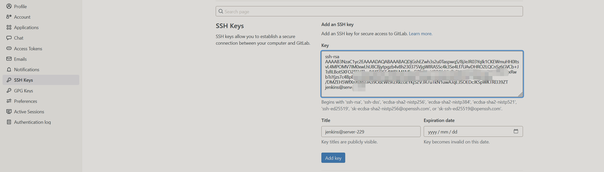
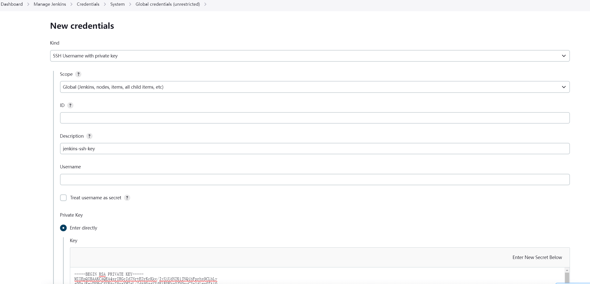
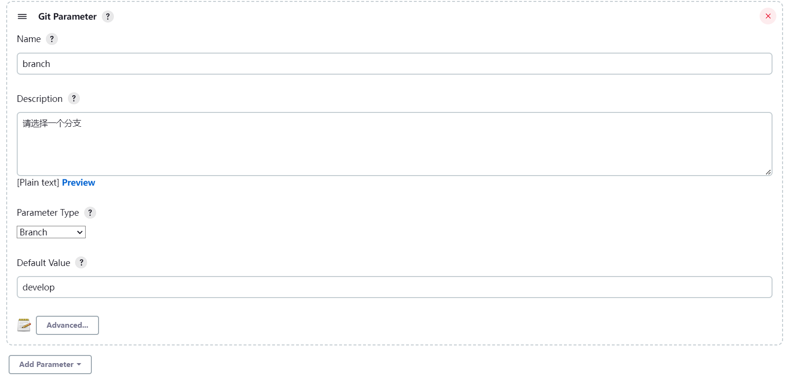

jenkins 文件上传与多分支参数化构建
文件上传
利用 Jenkins File Parameter实现上传文件
File locationfilename- 存放于当前任务目录下名为filename,同时 利用变量${filename}保存原始文件名,可在后续的构建脚本里调用，如：- 将上传的文件重命名为原始文件名：
mv filename ${inpfile} -f
通过参数化分支来选择不同分支名进行构建
在 Jenkins 所在服务器生成 ssh key
!!!info
需在jenkins用户下操作，否则jenkins 页面会报错，提示无权限
ssh-keygen -t rsa -C "jenkins@server-229"
将公钥 id_rsa.pub 拷贝到 GitLab SSH Keys里
cat ~/.ssh/id_rsa.pub

将私钥 id_rsa 拷贝到 jenkins 凭证里

jenkins 插件管理里安装 git parameter
任务里配置参数

在 Branches to build 里配置前面填写的参数名 ${branch}
进入项目，点击 Build with Parameters 选项，可以看到自动从远程仓库获取了项目的分支名.